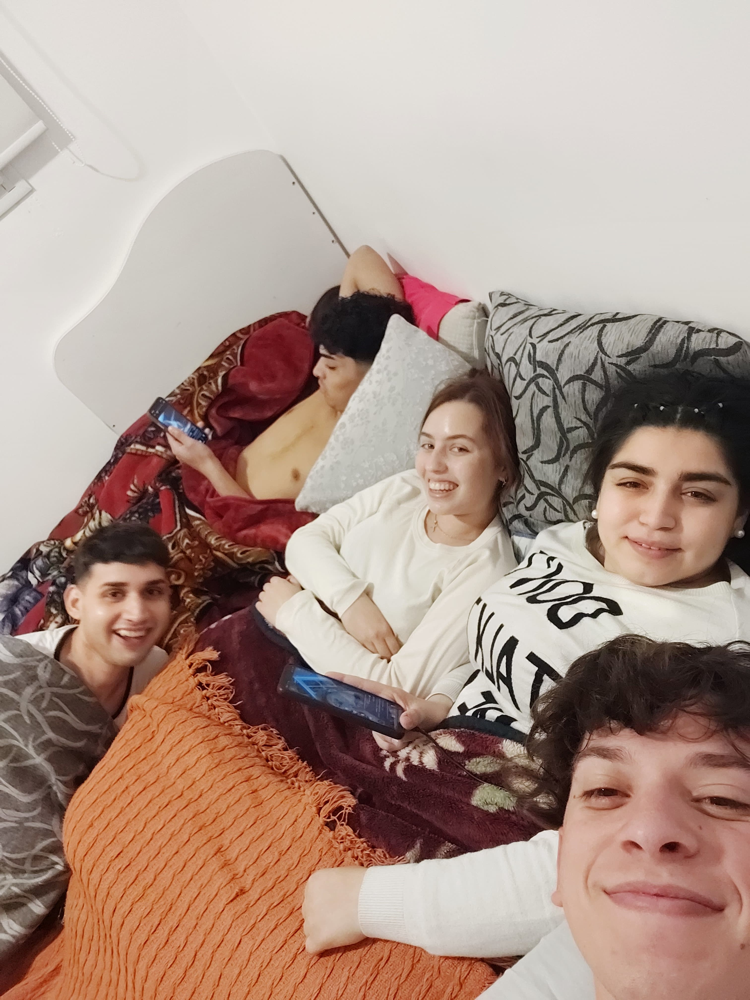

KatryRewind 2023
Este año el KatryRewind se presenta al mismo tiempo que Kiwi News.
Se pretende cerrar con los rewinds anuales para crear mensualmente un Kiwi News.
- Primer día 2023
- Maizales (15 / 01)
- Córdoba (26 / 01)
- Casa Guada (27 / 02)
- Red Dead Online (02 / 03)
- Café con huevo (09 / 03)
- Tiktok (18 / 03)
- Cumple Ari y Barri (19 / 04)
- Poronguín (26 / 05)
- Córdoba 2.0 (18 / 06)
- Casilda (23 / 07) 
- ? (12 / 08)
- Villarino (24 / 09)
- Dr Fernández (25 / 09)
- Salta (05 / 10)
- Bs As (15 / 10)
- 3 Añitos con ella (11 / 11)
- Gradua Cami Y Ame (25 / 11)
- Navidad (24 / 12)

El 2023 fue un año hermoso pero con complicaciones... aunque se pasaron distanciamientos, peleas y enojos, es hermoso saber las increíbles personas que rodean a uno y la historia entre sí con cada una de esas personas.
Agradezco y amo a cada amigo que se mantiene ahí conmigo, a mi familia y a mi amor.
Gracias por el 2023 y vamos por un 2024 mejor!